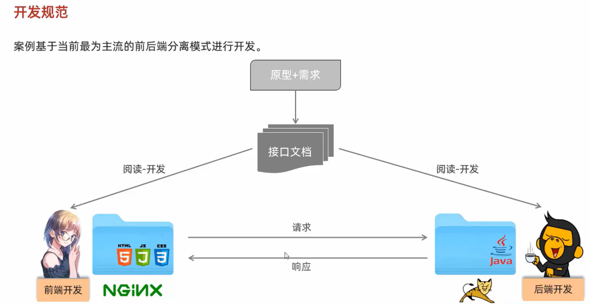
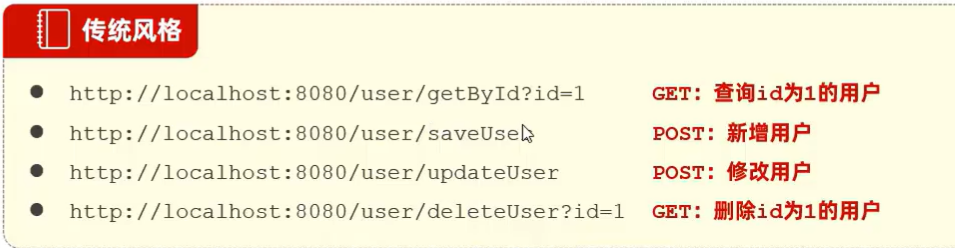
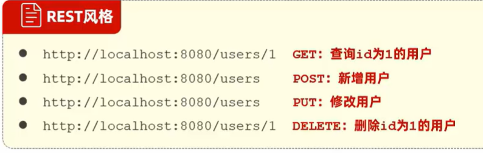
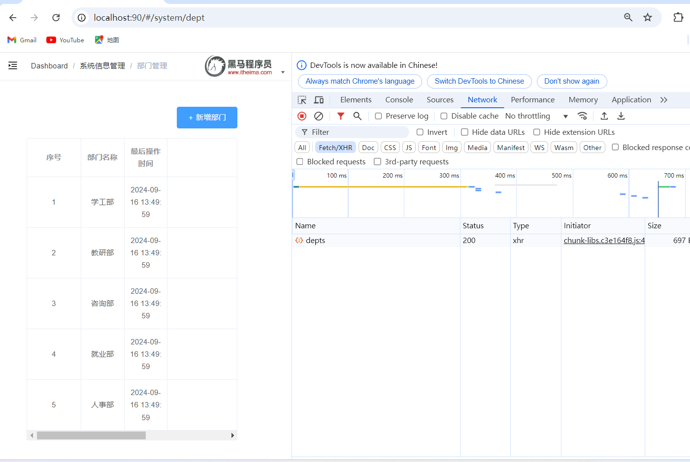
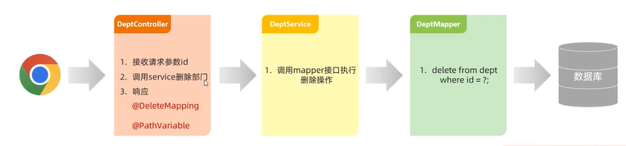
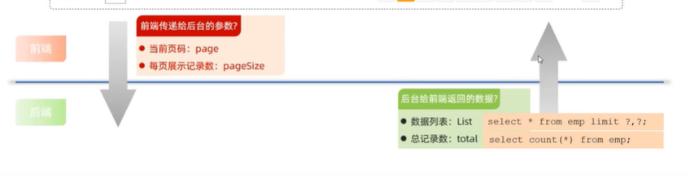
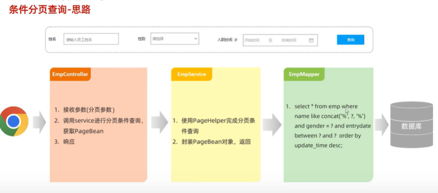

开发实操 data:2024-09-15 18:41:30
开发规范 1.基于前后端分离开发 
2.Restful 表述性状态转换，一种软件架构风格

restful是传统风格的规范化，URL定位资源，http动词(get,post…)描述操作
加s表示此类资源；前后端使用result作为返回对象

开发流程 查看页面原型明确需求
阅读接口文档
思路分析
接口开发
接口测试
前后端联调
具体功能实现 1.部门管理 日志管理
可以创建Logger对象来规范化日志，也可以使用@Slf4j对象；
配合配置文件来实现输出至控制台；
1 private static Logger log = LoggerFactory.getLogger(DeptController.class);
1 2 mybatis.configuration.log-impl =org.apache.ibatis.logging.stdout.StdOutImpl
规范化输出，Result输出文件，统一前后端通信
1 2 3 4 5 6 7 8 9 10 11 12 13 14 15 16 17 18 19 20 21 @Data @NoArgsConstructor @AllArgsConstructor public class Result { private Integer code; private String msg; private Object data; public static Result success () { return new Result (1 ,"success" ,null ); } public static Result success (Object data) { return new Result (1 ,"success" ,data); } public static Result error (String msg) { return new Result (0 ,msg,null ); } }
1 2 3 4 5 6 { "timestamp" : "2024-09-15T12:23:58.246+00:00" , "status" : 405 , "error" : "Method Not Allowed" , "path" : "/depts" }
1.查询部门 先从控制器层(controller层) 响应前端get请求开始，记录日志信息，调用service接口方法list
1 2 3 4 5 6 7 8 9 @Autowired @GetMapping("depts") public Result list () { log.info("查询全部部门数据" ); List<Dept> deptList = deptService.list(); return Result.success(deptList); }
(service层，业务逻辑层，存放业务逻辑处理，不直接对数据库进行操作，有接口和接口实现类，提供controller层调用的方法。)
在实现类里重写实现方法，将获取的数据自动注入，调用mapper层方法，获取数据库数据
1 2 3 4 5 6 7 @Autowired private DeptMapper deptMapper;@Override public List<Dept> list () { return deptMapper.list(); }
实际上与数据库交互的mapper层，获取数据库数据的方法，自动装填到IOC容器，
1 2 3 4 5 6 @Mapper public interface DeptMapper { @Select("select * from dept") List<Dept> list () ; }
然后再一路回调到controller层，调用Result方法响应前端请求；
2.前后端联调 结合开发的前端环境来调试后端程序

可以看到刷新后，数据成功渲染至前端页面
小结：明确需求，结合接口文档，进行思路分析，在进行接口开发；
而后可以使用Postman简单测试程序是否有误，确认无误后可以前后端联结调试；
：了解@Slf4j注释，可以创建一个logger对象；记录日志
3.删除部门 明确需求 在页面中点击删除，弹出确认删除提示框，点击确认并删除对应数据；
1 2 3 4 5 请求路径：/depts/{id} 请求方式：DELETE 接口描述：该接口用于根据ID删除部门数据
响应数据
参数格式：application/json
参数说明：
参数名
类型
是否必须
备注
code
number
必须
响应码，1 代表成功，0 代表失败
msg
string
非必须
提示信息
data
object
非必须
返回的数据
响应数据样例：
1 2 3 4 5 { "code" : 1 , "msg" : "success" , "data" : null }
思路分析：

具体实现：先在controller层接收前端的delete请求，调用service层delete方法；然后再service接口实现类中，调用mapper层delete方法实现service层delete方法，然后再去mapper层编写相关删除代码；
controller层：注意上方有无@Autowired注解，自动填装service相关对象
1 2 3 4 5 6 7 @DeleteMapping("/depts/{id}") public Result delete (@PathVariable Integer id) { log.info("根据id删除部门：{}" ,id); deptService.delete(id); return Result.success(); }
service层：接口实现类，实现相关接口，调用mapper层相关方法
1 2 3 4 @Override public void delete (Integer id) { deptMapper.delete(id); }
mapper层：实际操作数据库，@Mapper注解填充IOC容器；
1 2 @Delete("delete from dept where id = #{id}") void delete (Integer id) ;
4.新增部门 明确需求 1 2 3 4 5 请求路径：/depts 请求方式：POST 接口描述：该接口用于添加部门数据
格式：application/json
参数说明：
参数名
类型
是否必须
备注
name
string
必须
部门名称
请求参数样例：
思路
响应数据 参数格式：application/json
参数说明：
参数名
类型
是否必须
备注
code
number
必须
响应码，1 代表成功，0 代表失败
msg
string
非必须
提示信息
data
object
非必须
返回的数据
响应数据样例：
1 2 3 4 5 { "code" : 1 , "msg" : "success" , "data" : null }
具体实现 再controller层中接收post请求数据；，调用service层相关方法，在其实现类中设置一些必要属性后调用mapper层相关方法，再在mapper层实现insert操作
1 2 3 4 5 6 7 8 9 10 11 12 13 14 15 16 17 18 19 @PostMapping("/depts") public Result add (@RequestBody Dept dept) { log.info("新增部门：{}" ,dept); deptService.add(dept); return Result.success(); } @Override public void add (Dept dept) { dept.setCreateTime(LocalDateTime.now()); dept.setUpdateTime(LocalDateTime.now()); deptMapper.insert(dept); } @Insert("insert into dept(name,create_time,update_time) values(#{name},#{createTime},#{updateTime})") void insert (Dept dept) ;
5.修改部门 分析：根据id查询相关部门信息，更改该部门名称，传入id和name，记得要修改数据更新时间；
6.一些小结 做完后发现他们都有相同的/depts请求路径，可以使用@RequestMapping注解来声明该类的请求路径，这样这个类里面方法的请求路径就是类的请求路径+方法的请求路径；
1 2 3 4 5 6 7 8 9 10 11 12 13 14 15 16 17 18 19 20 21 22 23 24 25 26 27 28 29 30 @Slf4j @RestController @RequestMapping("/depts") public class DeptController { @Autowired private DeptService deptService; @GetMapping public Result list () { log.info("查询全部部门数据" ); List<Dept> deptList = deptService.list(); return Result.success(deptList); } @DeleteMapping("/{id}") public Result delete (@PathVariable Integer id) { log.info("根据id删除部门：{}" ,id); deptService.delete(id); return Result.success(); } @PostMapping public Result add (@RequestBody Dept dept) { log.info("新增部门：{}" ,dept); deptService.add(dept); return Result.success(); } }
2.查询员工管理 了解需求文档具体问题
1.员工列表查询-了解分页查询 相关MySQL语句
1 select * from table order by id limit m, n;
此处m为查询后起始位置，n为每页记录数量；
仅需回应查询后地表格和总记录数量

参数格式：queryString
参数说明：
参数名称
是否必须
示例
备注
name
否
张
姓名
gender
否
1
性别 , 1 男 , 2 女
begin
否
2010-01-01
范围匹配的开始时间(入职日期)
end
否
2020-01-01
范围匹配的结束时间(入职日期)
page
是
1
分页查询的页码，如果未指定，默认为1
pageSize
是
10
分页查询的每页记录数，如果未指定，默认为10
请求数据样例：
1 /emps?name=张&gender=1&begin=2007-09-01&end=2022-09-01&page=1&pageSize=10
响应数据：
参数格式：application/json
参数说明：
名称
类型
是否必须
默认值
备注
其他信息
code
number
必须
响应码, 1 成功 , 0 失败
msg
string
非必须
提示信息
data
object
必须
返回的数据
|- total
number
必须
总记录数
|- rows
object []
必须
数据列表
item 类型: object
|- id
number
非必须
id
|- username
string
非必须
用户名
|- name
string
非必须
姓名
|- password
string
非必须
密码
|- entrydate
string
非必须
入职日期
|- gender
number
非必须
性别 , 1 男 ; 2 女
|- image
string
非必须
图像
|- job
number
非必须
职位, 说明: 1 班主任,2 讲师, 3 学工主管, 4 教研主管, 5 咨询师
|- deptId
number
非必须
部门id
|- createTime
string
非必须
创建时间
|- updateTime
string
非必须
更新时间
响应数据样例：
1 2 3 4 5 6 7 8 9 10 11 12 13 14 15 16 17 18 19 20 21 22 23 24 25 26 27 28 29 30 31 32 33 34 35 { "code" : 1 , "msg" : "success" , "data" : { "total" : 2 , "rows" : [ { "id" : 1 , "username" : "jinyong" , "password" : "123456" , "name" : "金庸" , "gender" : 1 , "image" : "https://web-framework.oss-cn-hangzhou.aliyuncs.com/2022-09-02-00-27-53B.jpg" , "job" : 2 , "entrydate" : "2015-01-01" , "deptId" : 2 , "createTime" : "2022-09-01T23:06:30" , "updateTime" : "2022-09-02T00:29:04" } , { "id" : 2 , "username" : "zhangwuji" , "password" : "123456" , "name" : "张无忌" , "gender" : 1 , "image" : "https://web-framework.oss-cn-hangzhou.aliyuncs.com/2022-09-02-00-27-53B.jpg" , "job" : 2 , "entrydate" : "2015-01-01" , "deptId" : 2 , "createTime" : "2022-09-01T23:06:30" , "updateTime" : "2022-09-02T00:29:04" } ] } }
2具体思路 先在mapper层设计count方法和page方法，与数据库交互获得总记录个数和记录数据
1 2 3 4 5 6 7 8 9 10 11 12 @Autowired private EmpService empService;@GetMapping("/emps") public Result page (@RequestParam(defaultValue = "1") Integer page, @RequestParam(defaultValue = "10") Integer pageSize) { log.info("分页查询员工表，参数：{}，{}" ,page,pageSize); PageBean pageBean = empService.page(page-1 ,pageSize); return Result.success(pageBean); }
然后在controller层调用service层page方法，在其实现类中重写该方法
1 2 3 4 5 6 7 8 9 10 11 12 @Autowired private EmpMapper empMapper;@Override public PageBean page (Integer page, Integer pageSize) { Long count = empMapper.count(); Integer start = (page)*pageSize; List<Emp> empList = empMapper.page(start, pageSize); return new PageBean (count,empList); }
3小结 注意页码与实际数据库操作对应关系
指定默认值注解@RequestParam(default=value)
4有关分页插件Page Helper 相关代码
1 2 3 @Select("select * from emp") public List<Emp> list () ;
1 2 3 4 5 6 7 8 9 10 11 12 @Overrive public PageBean page (Integer page,Integer pageSize) { PageHelper.startPage(page,pageSize); List<Emp> empList = empMapper.list(); Page<Emp> p = (Page<Emp>) empList; PageBean pageBean = new PageBean (p.getTotal(),p.getResult()); return pageBean; }
依赖引入
1 2 3 4 5 6 //pom.xml <dependency > <groupId > com.github.pagehelper</groupId > <artifactId > pagehelper-spring-boot-starter</artifactId > <version > 1.4.2</version > </dependency >
5条件分页查询 
6使用动态SQL 使用静态SQL语句太过麻烦，代码结构变得臃肿
使用xml映射文件动态配置SQL条件，三点规范
1同包同名，2引入规则，配置namespace 3，SQL语句的id要与mapper语句中方法名一致
1 2 3 4 5 6 7 <?xml version="1.0" encoding="UTF-8" ?> <!DOCTYPE mapper PUBLIC "-//mybatis.org//DTD Mapper 3.0//EN" "http://mybatis.org/dtd/mybatis-3-mapper.dtd" > <mapper namespace ="com.itheima.mapper.EmpMapper" > </mapper >
mapper标签内，id与mapper接口方法名一致，resultType是放回值类型
where标签可以解决 where语句内and关键字冗余情况
1 2 3 4 5 6 7 8 9 10 11 12 13 14 15 16 17 <select id ="list" resultType ="com.itheima.pojo.Emp" > select * from emp <where > <if test ="name!= null" > name like concat('%',#{name},'%') </if > <if test ="gender!= null" > and gender = #{gender} </if > <if test ="begin!= null and end != null" > and entrydate between #{begin} and #{end} </if > order by update_time desc </where > </select >
3删除员工管理 1考虑单个删除和批量删除，发现单个删除是批量删除的一种情况，仅开发批量删除接口 2思路 browser -》
EmpController：1接收路径参数与id数组2响应service进行批量删除3响应
使用@DeleteMapping、@PAthVarible注解 -》
EmpService：调用mapper接口进行批量删除操作 -》
EmpMapper：delete from emp where id in (?,?,?);
动态SQL实现，使用标签 -》
数据库
3实现 有关foreach标签，5个重要属性，collection：集合，item：自定义个体名，separator:个体间隔符，open：开始符，close：结束符
1 2 3 <foreach collection ="ids" item ="id" separator ="," open ="(" close =")" > </foreach >
代码实现
1 2 3 4 5 6 7 8 9 <delete id ="detele" > delete from emp where id in <foreach collection ="ids" item ="id" separator ="," open ="(" close =")" > #{id} </foreach > </delete >
4新增员工管理 1明确需求： 请求路径：/emps
请求方式：PUT
接口描述：该接口用于修改员工的数据信息
参数格式：application/json
参数说明：
名称
类型
是否必须
备注
id
number
必须
id
username
string
必须
用户名
name
string
必须
姓名
gender
number
必须
性别, 说明: 1 男, 2 女
image
string
非必须
图像
deptId
number
非必须
部门id
entrydate
string
非必须
入职日期
job
number
非必须
职位, 说明: 1 班主任,2 讲师, 3 学工主管, 4 教研主管, 5 咨询师
请求数据样例：
1 2 3 4 5 6 7 8 9 10 { "id" : 1 , "image" : "https://web-framework.oss-cn-hangzhou.aliyuncs.com/2022-09-03-07-37-38222.jpg" , "username" : "linpingzhi" , "name" : "林平之" , "gender" : 1 , "job" : 1 , "entrydate" : "2022-09-18" , "deptId" : 1 }
响应数据 josn ，Result对象格式
2具体思路 browser：->
EmpMapper：1接收并封装请求参数，2调用service方法保存数据，3响应
使用@PostMapping注解响应，@RequestBody封装josn请求 ->
EmpService：1补充实体基础属性，2调用mapper接口进行保存数据操作->
EmpMapper：1insert into emp( …) values(?,?,?); ->数据库
3实现 1 2 3 4 5 6 7 8 9 10 11 @PostMapping public Result save (@RequestBody Emp emp) { log.info("新增员工emp：{}" ,emp); empService.save(emp); return Result.success(); }
1 2 3 4 5 6 7 @Override public void save (Emp emp) { emp.setCreateTime(LocalDateTime.now()); emp.setUpdateTime(LocalDateTime.now()); empMapper.insert(emp); }
1 2 3 4 5 @Insert("insert into emp(username, name, gender, image, job, entrydate, dept_id, create_time, update_time) " + "values(#{username},#{name},#{gender},#{image},#{job},#{entrydate},#{deptId},#{createTime},#{updateTime})") void insert (Emp emp) ;
4修改员工 1需求 请求路径：/emps
请求方式：PUT
接口描述：该接口用于修改员工的数据信息
参数格式：application/json
参数说明：
名称
类型
是否必须
备注
id
number
必须
id
username
string
必须
用户名
name
string
必须
姓名
gender
number
必须
性别, 说明: 1 男, 2 女
image
string
非必须
图像
deptId
number
非必须
部门id
entrydate
string
非必须
入职日期
job
number
非必须
职位, 说明: 1 班主任,2 讲师, 3 学工主管, 4 教研主管, 5 咨询师
请求数据样例：
1 2 3 4 5 6 7 8 9 10 { "id" : 1 , "image" : "https://web-framework.oss-cn-hangzhou.aliyuncs.com/2022-09-03-07-37-38222.jpg" , "username" : "linpingzhi" , "name" : "林平之" , "gender" : 1 , "job" : 1 , "entrydate" : "2022-09-18" , "deptId" : 1 }
2思路 browser：->put请求josn请求体
controller：接收此请求，使用@RequestBody注解映射为Emp对象，log.info()打印日志信息，调用service层update方法->
service:在实现类中重写update方法，设置其updateTime时间为现在，调用mapper层update方法，与数据库交互，通过id更新单条记录；
3具体实现 1 2 3 4 5 6 7 8 9 10 11 12 13 14 15 16 17 18 19 @PutMapping public Result update (@RequestBody Emp emp) { log.info("修改员工信息：{}" ,emp); empService.update(emp); return Result.success(); } @Override public void update (Emp emp) { emp.setUpdateTime(LocalDateTime.now()); empMapper.update(emp); } @Update("update emp set username=#{username},name=#{name}, gender=#{gender},image=#{image},job=#{job}," + "entrydate=#{entrydate},dept_id=#{deptId},update_time=#{updateTime} where id=#{id} ") void update (Emp emp) ;
5文件上传 1简介 将本地文件图片、音频和视频等文件上传到服务器，供其他用户浏览或下载的过程
上传三要素：
1前端要定义一个form表单，其必须含有一个type值为file的input标签，
2此表单的提交方式必须为post(就是from的method属性值为post)，
3指定表单的enctype属性值为multipart/from-data(编码格式)
1 2 3 4 5 6 <form action ="/upload" method ="post" enctype ="multipart/form-data" > 姓名: <input type ="text" name ="username" > <br > 年龄: <input type ="text" name ="age" > <br > 头像: <input type ="file" name ="image" > <br > <input type ="submit" value ="提交" > </form >
接收数据 -multipartFile file
若与JavaBean之中的image不一致，可以使用@RequestParam(“image”)注解单独区指定
1 2 3 4 5 6 7 8 9 10 11 12 @Slf4j @RestController public class UploadController { @PostMapping("/upload") public Result uplaod (String name, Integer age, MultipartFile image) { log.info("上传图片image：{},{},{}" ,name,age,image); return Result.success(); } }
2本地存储 在服务器接收到上传来的文件之后，存储在本地服务器磁盘内；
考虑存储位置，及存储的文件名，
1 2 3 4 5 6 7 8 9 10 11 12 13 14 15 16 17 18 19 20 @Slf4j @RestController public class UploadController { @PostMapping("/upload") public Result uplaod (String name, Integer age, MultipartFile image) throws IOException { log.info("上传图片image：{},{},{}" ,name,age,image); String originalFilename = image.getOriginalFilename(); int index = originalFilename.lastIndexOf("." ); String extname = originalFilename.substring(index); String newFileName = UUID.randomUUID().toString()+extname; log.info("新的文件名：{}" ,newFileName); image.transferTo(new File ("E:\\file\\JavaStudy\\code\\source\\image\\" +newFileName)); return Result.success(); } }
此处仅可以上传小于1M大小文件，可以修改SpringBoot默认配置来增加可上传文件大小
1 2 3 4 spring.servlet.multipart.max-file-size =10MB spring.servlet.multipart.max-request-size =100MB
弊端：前端无法直接访问，对于大量的数据，扩容很困难；损坏可能大
3阿里云OSS 阿里云：阿里巴巴旗下的云计算公司，国内最大的云服务提供商
第三方服务通用思路：准备工作->参照官方SDK编写入门程序->集成使用
阿里云OSS使用流程：注册阿里云->充值->开通对象存储服务(OSS)->创建bucket->获取密钥AccessKey->参照官方文档SDK编写->案例集成OSS
1 2 3 4 5 6 7 8 9 10 11 12 13 14 15 16 17 18 19 20 21 22 23 <dependency > <groupId > com.aliyun.oss</groupId > <artifactId > aliyun-sdk-oss</artifactId > <version > 3.17.4</version > </dependency > <dependency > <groupId > javax.xml.bind</groupId > <artifactId > jaxb-api</artifactId > <version > 2.3.1</version > </dependency > <dependency > <groupId > javax.activation</groupId > <artifactId > activation</artifactId > <version > 1.1.1</version > </dependency > <dependency > <groupId > org.glassfish.jaxb</groupId > <artifactId > jaxb-runtime</artifactId > <version > 2.3.3</version > </dependency >
5修改员工数据 根据id查询实现数据回显，get请求；修改数据在上面已完成
6配置文件 1参数配置化 即在properties文件内配置，适合小项目
类似的xml配置文件太臃肿；
2yml文件配置化 即在yml文件内配置，这种配置方法层次性更好
3@ConfigurationProperties 在yml文件中配置，然后再新建的xxxProperties类前使用该注解引入,自动注入；
1 2 3 4 5 6 7 8 9 10 11 12 13 14 @Data @Componet @ConfigurationProperties(prefix="aliyun.oss") public class AliOSSProperties { private String endpoint; private String accessKeyId; private String accessKeySecret; pricate String bucketName; } @Autowired private AliOSSProperties aliOSSporperties;